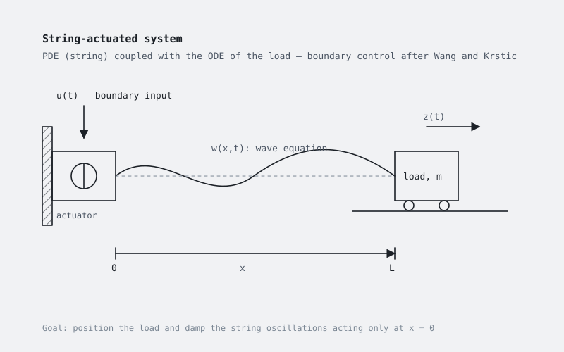

Control of string-actuated systems
Modelling and control of systems actuated through a string or cable — a distributed-parameter element coupled to rigid bodies — following the approach of Wang and Krstic.

What it is
When a load is moved through a long string or cable, the string is not a rigid link: it is a distributed-parameter element governed by a wave equation, and the actuator can only act on its boundary. Controlling the load position and damping the string oscillations is then a PDE–ODE control problem.
This note follows the treatment of string-actuated systems by Wang and Krstic: the model of the string coupled with the rigid bodies at its ends, the control law designed on the boundary, and simulation results that show the behaviour of the closed loop. The topic connects directly with ropeway and hoisting drives, where the rope dynamics set the limits of the drive control.